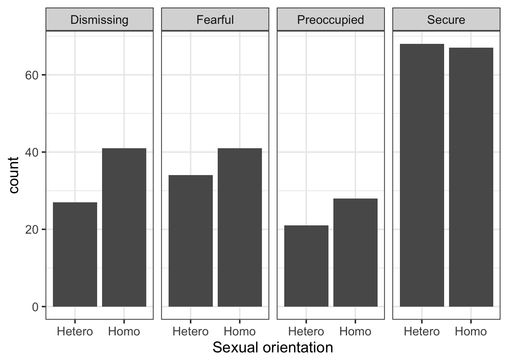

library(tidyverse)
attach_data <- read_csv('https://uoepsy.github.io/data/attachmentstyle_sexuality.csv')
ggplot(attach_data, aes(x = sexuality)) +
geom_bar() +
facet_wrap(~ style, nrow = 1) +
labs(x = "Sexual orientation")
Pick someone new to be the driver this week. If everyone in the group has already had a week as the driver, start going round again!
The driver will type the code. The rest of you are navigators, you need to tell the driver where to go (i.e., what to type!).
Driver instructions:
Navigator instructions:
In this week’s workshop you will work with a real dataset from Ridge & Feeney (1998).
You can access the dataset at https://uoepsy.github.io/data/attachmentstyle_sexuality.csv. Before you start answering any questions, read the data into R.
Using a 5% significance level, you will answer the following research question:
Is there a significant association between sexual orientation and attachment style?
Create a plot that visualises the association between the sexual orientation (sexuality) and attachment styles (style) variables in the data.
Write a brief summary of what you observe.
TODO - Link to flashcard on plotting association between two categorical variables.
Solution 1. We can create a barplot of attachment styles, faceted by sexuality:

There is roughly an equal number of homosexual and heterosexual participants who are “Secure”. There are more homosexual than heterosexual poeple that are “Dismissing”, “Fearful”, and “Preoccupied”.
Write down the null hypothesis (\(H_0\)) and the alternative hypothesis (\(H_1\)) for your research question using plain English.
Solution 2.
Run a chi-squared (\(\chi^2\)) test of independence in R.
chisq.test() R function to test the association between sexuality and style.correct = FALSE to run the non-bias-adjusted version of the test.TODO - Link to chisq.test() flashcard
Solution 3.
Check the data requirements and assumptions of the chi-squared test of independence.
Data requirement 1. Both variables are categorical.
glimpse() or head() to check this.Data requirement 2. All expected counts \(\ge\) 5.
<chisquare results>$expected.Assumption of independence. The obtained sample data are a random sample from the population of interest.
Solution 4. Data requirement 1. Both sexuality and style are categorical variables as shown below:
Rows: 327
Columns: 2
$ style <chr> "Dismissing", "Dismissing", "Dismissing", "Dismissing", "Dis…
$ sexuality <chr> "Hetero", "Hetero", "Hetero", "Hetero", "Hetero", "Hetero", …Data requirement 2. The lowest expected count is 22.48, which is above the minimum threshold of 5.
attach_data$style
attach_data$sexuality Dismissing Fearful Preoccupied Secure
Hetero 31.193 34.404 22.477 61.927
Homo 36.807 40.596 26.523 73.073Assumption of independence. Each participant only contributed one response to the survey and they contribute to one cell of the contingency table each.
Let’s now practice how to report the results of a chi-squared test of independence using APA style.
The general format is:
\(\chi^2\)([degrees of freedom], \(N\) = [sample size]) = [chi-squared statistic], \(p\) = [p-value]
Write a brief summary of your findings using APA style. Ensure you communicate if you have rejected or not the null hypothesis and the significance level used.
This is the write-up from the lecture slides as an example:
To find out whether occurrence frequencies of ADHD and ASD are independent in children, we performed a \(\chi^2\) test of independence. We found a significant association between ADHD and ASD (\(\chi^2\)(1, \(N\) = 70,913) = 3270, \(p\) < .001). Therefore, at \(\alpha\) = .05, we reject the H0 that ADHD and ASD are independent in children. Specifically, the test’s residuals indicate that ADHD and ASD co-occur in children more frequently than we’d expect.
Solution 5.
A chi-squared test of independence was conducted to examine whether attachment style differs by sexual orientation. The results indicated no significant association between sexual orientation and attachment style, \(\chi^2\)(3, \(N\) = 327) = 2.33, \(p\) = .507. At \(\alpha = .05\), we fail to reject the null hypothesis and conclude that there is not enough evidence to suggest that homosexual and heterosexual people show different patterns of attachment styles.
Finishing up
Once you’ve finished, don’t forget to: